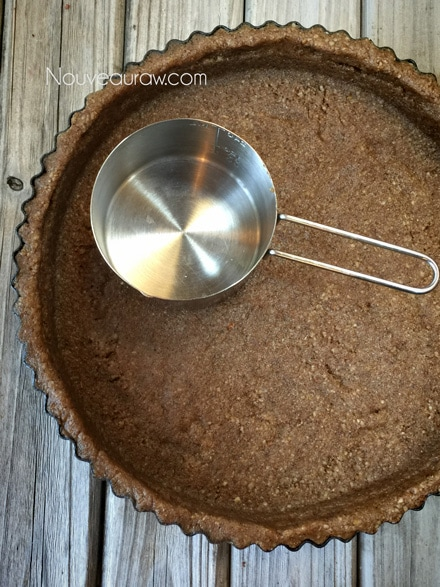
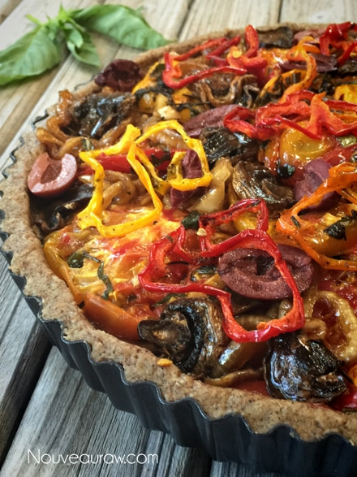
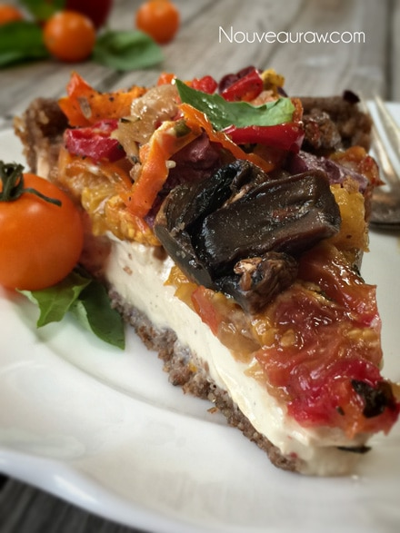

Caramelized Onion & Wilted Veggie Cream Tart

~ raw, vegan, gluten-free ~
This beautiful rustic-style tart makes a gorgeous centerpiece for any raw, gluten-free, vegan, vegetarian, lacto-vegetarian, pescetarian, presbyterian, Mediterranean meal. Shoot, it could even be the center of a Standard American Diet table setting, and I am confident that it would be one of the first dishes to be devoured.
The savory pecan crust holds an assortment of flavorful veggies that have the appearance of being cooked but instead were gently wilted through the process of dehydration, leaving all the nutrients and enzymes intact.
Wilted vegetables are truly a thing of beauty, I love all the colors, and the flavors are enhanced leaving you with an explosion of excitement for your taste buds. Ok, the explosion may be too strong of a word… but darn close.
Are you constantly on the look out on how to save time in the kitchen by creating meal staples? Prepare a variety of veggies this way on a weekly basis than tuck them away in your fridge so you can incorporate them into your meals throughout the week.
When creating this tart, you can make one large one (family-style), or you can create roughly 3-4 small tarts, depending on the size of the pans. Not only are small one’s fun to serve, but you can also tailor them to the liking of those you are serving. Perhaps, one person doesn’t or can’t eat onions, or another can’t eat mushrooms.., you see where I am going with this.
This tart would be wonderfully paired with a spicy arugula salad on the side, simply dressed with fresh lemon and olive oil. I hope you enjoy this recipe and please let me know what you think. Blessings, amie sue
Yields 9.5″ tart pan
Crust:
- 3 cups raw pecans, soaked & dehydrated
- 3 Tbsp marinade liquid (from caramelized onion)
- 1 tsp black pepper
- 1/4 tsp Himalayan pink salt
Filling: can use right away or ferment for 24 hours (that is what I did)
- 2 cups cashews, soaked 2+ hours
- 1/4 cup water
- 1 clove garlic
- 1 Tbsp fresh lemon juice
- 1 Tbsp chickpea miso
- 1/4 tsp Himalayan pink salt
- 1/2 tsp white pepper
Topping:
Preparation:
Crust:
- Prepare the tart pan by lining the base with plastic wrap. Set aside.
- Place the pecans, salt, and pepper in the food processor, fitted with the “S” blade. Process to a small crumble.
- It’s best to use dry pecans for the sake of texture. Not freshly soaked.
- Add 2 Tbsp of the leftover marinade liquid and process until the crust batter sticks together when pinched. This won’t take long.
- Loosely place the crust batter evenly over the base of the tart pan.
- Start by building the edges of the pan first, then press the crust firmly and to ferment slightly into the base.
- Slide into the dehydrator along with the tomatoes. Dry until the tomatoes are done.
Filling:
- After soaking the cashews, drain and discard the soak water.
- In a high-speed blender, combine the cashews, water, garlic, lemon juice, miso, salt, and pepper. Start on low, increasing to high. Blend until creamy and no grit can be detected.
- Pour into a bowl and lightly cover with a cloth. Let it rest on the counter for 24 hours to slightly ferment.
- You can skip the fermenting process, but I don’t recommend it.
- After it sits for 24 hours you will notice that it seems a little “puffy,” just stir it well, and you are good to go.
Assembly:
- Pour the filling into the crust and spread it out evenly.
- Line to the top with basil leaves.
- Arrange the tomatoes, onions, mushrooms, and olives on top.
- Enjoy right away or better yet… chill it for 4+ hours. Overnight is better as it allows the cashew cheese to firm up. Either way… it’s all good!
- Keep leftovers covered in the fridge for 2-3 days. Don’t freeze, this will alter the texture of the tomatoes in an unpleasant way.
Culinary Explanations:
- Why do I start the dehydrator at 145 degrees (F)? Click (here) to learn the reason behind this.
- When working with fresh ingredients, it is important to taste test as you build a recipe. Learn why (here).
- Don’t own a dehydrator? Learn how to use your oven (here). I do however truly believe that it is a worthwhile investment. Click (here) to learn what I use.



© AmieSue.com